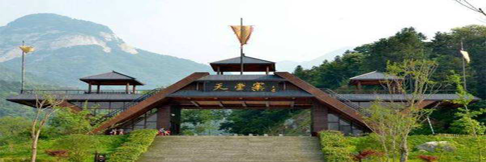
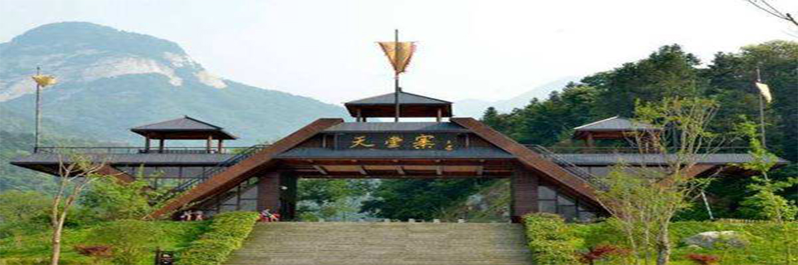

当前位置：>白马尖风景区
大别山主峰白马尖（海拔1777米），大别山次主峰多云尖（海拔1763米）具有不同的象征意义，传统意义上的白马尖象征着飞黄腾达，多云尖象征着幸福安康，这恰恰应和了当代人类社会的二大主题，和平与发展。大别山主峰白马尖的山顶布满了奇松怪石，东北坡的千 年都枝杜娟园，生长着上千棵姿态各异的都枝杜娟，春暧花开，漫山遍野洋溢着华贵之气，其赏心悦目之程度，举世罕见。
大别山主峰（白马尖）景区为国家AAAA级旅游景区， 同时也是大别山国家地质公园的核心园区——白马尖园区。景区地处安徽省六安市霍山县和安庆市岳西县的交界处，于2009年建成对外开放。
白马尖位于六安霍山县城90公里，位于霍山县太阳乡境内。白马尖成山于燕山运动晚期， 为花岗石山体。山势磅礴，巍峨壮丽，聚高、雄、峻、特为一体。山峰形似白马，立地摩天，海拔1774米，为大别山的最高峰。
白马尖与多云尖遥遥相望，并称姊妹峰。二山之间常年云雾翻飞缥缈，波澜起伏，浩瀚似海。山中林深谷幽，清溪激湍，交响成韵。其形状各异的怪石，惟妙惟肖：虎头岩形似饿虎扑食，飞来石拔地而起，蛤蟆石岿然不动，拱状石似动非动。 白马尖仍为原始森林。蕴藏着丰富的动植物资源。金钱松、青钱松、红豆衫、香榧、巨紫茎、 都枝杜鹃、天女花、黄山松、金钱豹、麂、果子狸、豪猪、白冠长尾雉、甲板龟、娃娃鱼等应有皆有。
白马尖高峰耸峙，群峦环绕，险拔峻峭。登峰俯视，东方岳西的千脉群山，南面英山的鄂水故道，西北金寨的万顷桑园尽收眼底，斯巅神奇，观者有纳五洲风云之慨叹！游者攀援在密林深处，耳边时闻莺歌声、豹鸣声、瀑跌声，给人神秘莫测、回归自然之感。这是一片未被开发的处女地，自然环境和生态系统保护较好，是一个具有大别山区典型特征的、旅游价值很高的风景区 。多云尖上建有多云寺，为条块石垒砌而成，古老而原始，相传建于汉初，庙内所藏古物，具有一定的考古和观赏价值。
从霍山县城到白马尖景区，目前有三条交通路线可供选择。一是从省道S318经漫水河镇至陡沙河村后，转入省道S209,至太阳乡转入县道X071可至白马尖景区；二是从省道S318至鹿吐石铺转入县道X067，至大化坪镇转入县道X066，至青枫岭村转入县道X071至白马尖风景区；三是从霍山上济广高速G35往潜山方向，至石关出口下经黄尾收费站后上县道X084往黄尾方向，过黄尾镇后转入县道X069，经胡家河乡至磨子潭镇转入县道X071可至白马尖风景区。
特有自然资源和原始森林，为野生动物提供了良好的栖息、繁衍场所，兽类40种，鸟类117种，爬行两栖4种，鱼类7种。 兽类以野猪、豪猪、黄羊、穿山甲、灵猫、灰鼠、貂、鹿獐为代表。 鸟类以山鹰、长尾锦鸡、普通松鸡、画眉、百灵、八哥等为代表。 爬行两栖类以娃娃鱼、石蛙、甲板龟为代表。
大别山为革命老区．新民主主义革命时期，大别山区是中国红军第四方面军诞生的摇篮，无数热血男儿走上了不屈的抗争道路。长征会师后的8万红四方面军主力为共和国的诞生立下了不可磨灭的汗马功劳！ 1947年，刘邓大军千里跃进大别山，人民解放军转入战略进攻.刘邓大军开辟大别山根据地,严重地威胁了国民党统治中心南京和湖北重镇武汉。 1948年，刘邓总部在天堂寨脚下的九资河召开战略部署会议。从鄂豫皖这片大别山里走出了 共和国的1位元帅、2任国家主席和300多个开国将军。
山川秀美，地灵人杰。大别山南麓的英山县为活字印刷术发明者毕升故里。这里还是明代“医圣”万密斋、京剧鼻祖余三胜、辛亥革命元勋张振武、方志学家王葆心的故乡。 沧桑的古老历史，丰富的人文资源，众多的英才豪杰，传奇的风云故事，神秘的遗址遗迹……，这一切，无疑使这片古老而又青春的土地更增光彩，更显风流。
当前位置：>天堂寨风景区
天堂寨风景名胜区位于安徽省六安市金寨县与湖北省罗田县交界的地区，国家5A级旅游景区。天堂寨古称“多云山”，最高峰海拔1729.13米， 为大别山主峰之一，古称“吴楚东南第一关”，景区内有大小瀑布108道，其中落差达50米以上的18道。
天堂寨所处的大别山，是中国南北水系的分水岭，山北水往北流注入淮河，山南水往南流注入长江。所以在天堂寨峰顶北可望中原， 南可眺荆楚，海拔1729米的天堂顶有一口天塘，塘水不溢不涸，俗称“瑶池”。
景区总面积120平方公里，境内千米以上的高峰25座，天堂寨最高峰为大别山主峰之一。 其主要景点有白马大峡谷、龙剑峰、白马峰、瀑布群等 。
1987年天堂寨经省政府批准为第一批省级风景名胜区；1992年，经林业部批准为国家森林公园；1998年，经国务院批准为国家级自然保护区；2005年8月，包括天堂寨园区在内的安徽大别山(六安)被国土资源部批准为国家地质公园， 天堂寨为大别山地质公园主园区；2007年被批建为国家4A级旅游景区。
天堂寨园区位于金寨县西南部，其西南、东南与湖北省罗田、英山县接壤。园区内虎形地居中，南上天堂寨主峰、北倚白马雄峰，东去造钱坳，西登圣卦尖。地理坐标为：北纬31°06′18″～31°10′25″， 东经115°45′00″～115°48′35″。面积120平方公里。
天堂寨风景区山石泉水云松瀑雾巧夺天工， 天堂寨常年降雨量1350mm，平均气温16.4℃。 天堂寨属亚热带季风气候，具有典型的山地气候特征，气候温和，雨量充沛，温光同季，雨热同季。
天堂寨风景区属亚热带季风气候，具典型的山地气候特征，气候温和，雨量充沛，温光同季，雨热同季。年均日照时数“1400—1600小时，太阳年均辐射量95千卡/c㎡：年均气温12．5℃，夏季平均温度22℃，7月份平均气温23℃；冬季平均温度10℃， 1月份最低温度0．2℃≥10℃积温4500—5500℃，无霜期179—190天，年降雨量1932.8mm，相对湿度60～65%。
天堂寨园区地处大别山腹地。主峰天堂寨海拔1729.13米，系大别山区著名山峰之一，古称“吴楚东南第一关”。地貌类型主要为山峰、峡谷、水系和山间小盆地。 天堂寨园区的成土母岩为：上部为花岗岩体，下部为古老的变质岩。园区内土壤具有明显的垂直分带性，即800米以下为黄棕壤土， 800米以上为山地棕壤土，1600米以上为山地草甸土。土壤以重壤为主，有机质含量丰富，PH值5.2～6.9，呈微酸性。
天堂寨园区地处大别山隆起的核心部位。在园区的低海拔地带和峡谷之中出露的岩层为古老的变质岩――大别杂岩，构成园区的基底，其为一套角闪岩相——麻粒岩相深变质的岩石组合，主要岩性有斜长角闪岩、变粒岩、磁铁石英岩、花岗片麻岩、条带状构造。原岩时代为距今约26亿年的新太古代。岩浆活动在大别山造山带形成演化过程中表现十分强烈，岩浆岩在大别山极为发育， 是大别山主要物质组成，与园区地质地貌、地质景观息息相关的为燕山中晚期的岩浆活动。
天堂寨风景区继续对特殊群体进行优惠：60-70岁之间老人、4级以上残疾人、身高1.2m-1.4m儿童、全日制本科以下学生（含本科）凭相关证件景区给予门票优惠价格（半价）；导游（国导证）、媒体记者、现役军人、70岁以上老人、1-4级残疾人、省级以上摄影家协会会员凭有效证件免门票； 所有享受免门票、门票半价优惠的游客不再享受景区游览车票价减免或优惠，一律购买景区游览车全票28元/人。